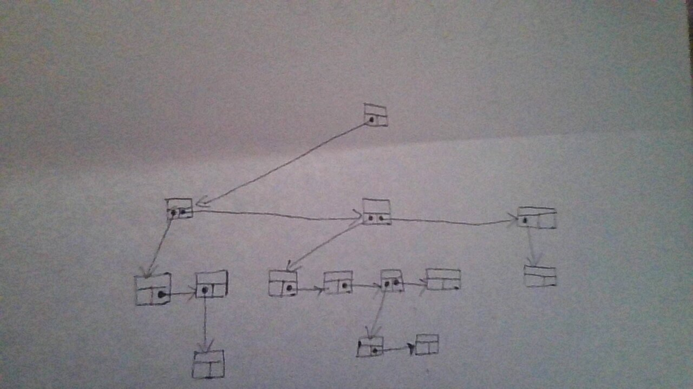

Data Structures
Table of Contents
- 1. Stack
- 2. Direct Address Table
- 3. Hash Table
- 4. Representing rooted trees using nodes
- 5. Binary Search Trees
- 6. Binary Heap
- 7. Graphs
1. Stack
A stack is a data structure which only allows insertion and deletion from one end of the array. The insertion is always on the extreme end of the array. The deletion can only be done on the element which was most recently added.
It is similar to stacking plates. The plate can only be added at the top of the stack and also only the last added plate to the stack can be removed (which will be on top).
Due to this property, Last In elements are removed First from a stack. Therefore, it is called a Last In First Out (LIFO) data structure or a First In Last Out (FILO) data structure.
To create a stack, we will keep track of the index which is the top of the array. This top index will increment when we insert element and decrement when we remove element.
1.1. Operation on stack
A stack has two operations
- Push
- Pop
2. Direct Address Table
Direct Address Tables are useful when we know that key is within a small range. Then, we can allocate an array such that each possible key gets an index and just add the values according to the keys.
This also assumes that keys are integers
- Table creation
struct table{ int * values; size_t min_key; size_t max_key; }; struct table create_table(size_t min_key, size_t max_key){ struct table r; r.values = (int * ) malloc(sizeof(int) * (max_key - min_key + 1) ); r.min_key = min_key; r.max_key = max_key; return r; }
- Table insert
void table_insert(struct table t, size_t key, int value){ if(key > t.max_key || key < t.min_key) assert(false && "Key value out of boundry"); t.values[key - t.min_key] = value; }
- Table delete
void table_delete(struct table t, size_t key){ if(key > t.max_key || key < t.min_key) assert(false && "Key value out of boundry"); t.values[key - t.min_key] = 0x00; }
- Table Search / Table Get
int table_get(struct table t, size_t key){ if(key > t.max_key || key < t.min_key) assert(false && "Key value out of boundry"); return t.values[key - t.min_key]; }
Using direct address tables is very useful when keys are enum values.
3. Hash Table
When the set of possible keys is large, it is impractical to allocate a table big enough for all keys. In order to fit all possible keys into a small table, rather than directly using keys as the index for our array, we wil first calculate a hash for it using a hash function. Since we are relying on hashes for this addressing in the table, we call it a hash table.
For a given key \(k_i\) in direct address table, we store value in \(table[k_i]\).
For a given key \(k_i\) in hash table, we store value in \(table[h(k_i)]\), where \(h()\) is the hash function.
So the main purpose of the hash function is to reduce the range of array indices.
3.1. Collision
Because we are reducing the range of indices, the hash function may hash two keys to the same slot. This is called a collision.
We should try to find a hash funtion which will minimise the number of collisions.
The number of keys is going to be greater than number of slots in table. Therefore avoiding all collisions is not possible.
There are two ways we will look at to resolve collision.
- Chaining
- Open addressing
3.1.1. Chaining
In chaining, rather than storing values in table slots. We will have linked lists at each slot which will store (key, value) pairs.
When the hash gives us a slot, we will add the value to linked list at that slot.
- Linked List structure
struct linked_list{ size_t key; int value; struct linked_list * next; };
- Table structure
struct table{ struct linked_list * table[]; size_t table_size; };
- Insertion
Insertion can be done in \(\theta (1)\) time if we assume that key being inserted is not already in the linked list. But we can add a check to see if the key was already inserted and modify that value.
// linked_list_add(struct linked_list * ll, size_t key, int value) // adds the given key,value to the start of the list void chained_hash_insert(struct table t, size_t key, int value){ linked_list_add(t.table[ h(key) ], key ,value); }
- Get / Search
// linked_list_search(struct linked_list * ll, size_t key) // gets the value stored with the given key void chained_hash_get(struct table t, size_t key){ return linked_list_search(t.table[ h(key) ], key); }
- Delete
// linked_list_delete(struct linked_list * ll, size_t key) // delete the node with the given key void chained_hash_delete(struct table t, size_t key){ linked_list_delete(t.table[ h(key) ], key); }
3.1.2. Performance of chaining hash table
The load factor is defined as number of elements per slot and is calculated as
\[ \alpha \text{(Load factor)} = \frac{\text{number of elements in hash table}}{\text{number of slots in hash table}} \]
The worst case for chaining is when all keys are assigned to a single slot. In this case searching for an element takes \(\theta (n)\) time.
If we assume that any given element is equally likely to be hashed into any of the slots, this assumption is called simple uniform hashing.
If we also assume that hash funtion takes constant time, then in the average case, the time complexity for searching key in the chaining hash table is
\[ \text{Average Case Searching} : \theta (1 + \alpha) \]
3.1.3. Open Addressing
In open addressing, all the key and value pair of entries are stored in the table itself. Because of this, the load factor \(\left( \alpha \right)\) can never exceed 1.
When we get a key whose slot is already taken, we will look for another empty slot. This is done by what is called probing. To get which slot to check next, we have various methods.
The sequence in which empty slots are looked for is fixed for given key, this sequence is called probe sequence.
It is necessary to keep probe sequence fixed for any given key, so that we can search for it later.
3.1.3.1. Linear probing
For a given ordinary hash function \(h(k)\), the linear probing uses the hash function
\[ linear\_h(k, i) = (h(k) + 1)\ mod\ m \]
We refer to \(h(k)\) as the auxiliary hash function.
In linear probing, we first check the slot [h(k)], if it is not empty, we check [h(k) + 1] then [h(k) + 2] …. upto slot [m - 1] after which we wrap around to [1], [2] … till we have checked all the slots.
Linear probing is easy to implement, but it suffers from primary clustering. In long runs of linear probing, keys tend to cluster together. This causes the performance of operations on hash table to degrade. The time to query a random element from table degrades to \(\theta (n)\).
3.1.3.2. Quadratic probing
For given auxiliary hash function \(h(k)\), the quadratic probing uses \[ quadratic\_h(k, i) = \left( h(k) + c_1i + c_2i^2 \right) \ mod\ m \] Where, \(c_1\) and \(c_2\) are positive auxiliary constants.
- If m is not considered, we just assume \(c_1 = 0, c_2 = 1\), this is the simplest form of quadratic probing.
- For \(m = 2^n\), a good choice for auxiliary constants is \(c_1=c_2=1/2\).
- For \(m = n^p\) where m, n and p are positive integers greater or equal to 2, constants \(c_1 = 1, c_2 = n\) are a good choice.
Quadratic probing works much better than linear probing.
If \(quadratic\_h(k_1, 0) = quadratic\_h(k_2,0)\), then that implies that all \(quadratic\_h(k_1, i) = quadratic\_h(k_2,i)\), i.e, they will have the same probe sequence. This leads to a probe sequence getting clustered. This is called secondary clustering. This also effects performance but not as drastically as primary clustering.
3.1.3.3. Double Hashing
Double hashing is one of the best available method for open addressing.
Double hashing uses two auxiliary hashing functions.
\[ double\_h(k, i) = \left( h_1(k) + i \times h_2(k) \right) \ mod\ m \]
The value of \(h_2(k)\) must be relatively prime (i.e, coprime) to number of slots (m).
- A convenient way to ensure this is let m be a power of 2 and \(h_2(k)\) be a hash function that always produces an odd number.
- Another way is to let m be a prime and make \(h_2(k)\) such that is always produces a positive integer less than m.
If we use one of the above two methods (either m is a power of 2 or a prime), then double hashing improves over linear and quadratic probing since keys will have distinct probe sequences.
When using the above values of m, performance of double hashing is very close to the performance of "ideal" scheme of uniform hashing.
*n Performace of open addressing
In open addressing load factor \(\left( \alpha \right) \le 1\). We will assume uniform hashing i.e, any element is equally likely to be hashed in any slot. We will also assume that for any key, each possible probe sequence is equally likely.
Under these assumptions, for load factor \(\alpha\). The number of probes in an unsuccessful search is at most \(1/(1 - \alpha )\)
This means that for a constant load factor, an unsuccessful search will run in \(\theta (1)\) time.
The number of probes on average for inserting an element under these assumptions is \(1/(1- \alpha )\)
The number of probes on averge in a successful search is at most \(\frac{1}{\alpha} ln\left( \frac{1}{1-\alpha} \right)\)
3.2. Hash Functions
A good hash funtion will approximately satisfy the simple uniform hashing, which means that any element is equally likely to be hashed to any slot.
\[ m : \text{Number of slots in hash table} \] \[ n : \text{Number of elements in hash table} \]
Suppose we knew that our keys are from a set of real numbers and the keys are picked uniformly. In this case, we could simply use the hash function \(h(k) = floor(mk)\).
Similarly, in many cases we can make a reasonably good hash funtion if we know the distribution of keys.
We will look at a few ways to make a hash function.
3.2.1. The division method
In division method, we map a key \(k\) into one of the \(m\) slots by taking the remainder of k divided by m. \[ h(k) = k\ mod\ m = k\ \%\ m \] In most cases, \[ m : \text{Number of slots in hash table} \] But there are some cases where \(m\) is chosen to be something else.
- If \(m\) is a power of 2, then \(k\ mod\ m\) will give us the least significant \(log_2m\) bits of \(k\). When making a hash function, we want a function that depends on all bits of the key. So, we should not use this method if m is a power of 2.
- A prime number not close to a power of 2 is a good choice for \(m\) in many cases. So when deciding the number of slots for the hash table, we can try to make \(m\) a prime which will accomodate our elements with less load factor.
3.2.2. The multiplication method
In multiplication method, we first multiply the key \(k\) with a constant \(A\) which is in range \(0 < A < 1\). Then we get the fractional part of \(kA\). Then we multiply the fractional part by \(m\) and floor it to get the hash.
\[ h(k) = floor(m \times decimal\_part(kA) ) \]
The advantage of multiplication method is that we can choose any value of \(m\). We can even choose \(m\) to be a power of 2.
We can choose any value of \(A\). The value depends on characteristics of data,
\[ A \approx \frac{\sqrt{5} - 1}{2} \]
will work reasonably well.
Example, Suppose
\[ key\ (k) = 1234 \] \[ m = 128 \] And our value of \(A\) is, \[ A = 0.618 \] Then to get our \(h(k)\), \[ kA = 762.612 \] \[ decimal\ part(kA) = 0.612 \] \[ floor(m \times decimal\_part(kA) ) = h(k) = 78 \]
In C language,
size_t hash(size_t key, size_t m){ double kA = key * 0.618; // get decimal part only double kA = kA - ((int) kA); // floor the product of decimal part and m size_t h = floor(m * kA); return h; }
3.2.3. Mid square method
In this method, we square the keys and then we choose some digits from the middle. Example, \[ h(10) = middle\ digit \left( 10 \times 10 \right) = midlle\ digit (100) = 0 \] \[ h(11) = middle\ digit \left( 11 \times 11 \right) = midlle\ digit (121) = 2 \] \[ h(12) = middle\ digit \left( 12 \times 12 \right) = midlle\ digit (144) = 4 \] With huge numbers, we need to take care of overflow conditions in this method.
3.2.4. Folding method
While this method can be used on integers, this method is usually used where the key is segmented. For example in arrays or when key is a string.
In this method, we add all of the segments and then we mod it with the number of slots.
\[ h(k) = \left( \text{Sum of all the segments} \right) mod\ m \]
Example, for string "hello"
sum = 'h' + 'e' + 'l' + 'l' + 'o'
sum = 104 + 101 + 108 + 108 + 111 = 532
If m = 100, then
h(k) = 532 mod 100
h(k) = 32
3.3. Universal Hashing
Suppose a malicious adversary who know's our hash function chooses the keys that are to be hashed. He can choose keys that all hash to same slot therefore degrading performance of our hash table to \(\theta (n)\).
Fixed hash functions are vulnerable to such attacks. To prevent this from happening, we create a class of function from which a function will be choosen randomly in a way that is independent of the keys, i.e, any function can be choosen for any key. This is called universal hashing.
The randomization of chosen hash function will almost guarentee that we won't get the worst case behaviour. The hash function is not changed every time we do an insert or delete operation. Changing hash function after each operation will not allow us to lookup elements in optimal time. We only change to another hash function when we do rehashing.
3.3.1. Rehashing
When we need to increase the size of hash table or change the hash function, we have to do rehashing.
Rehashing is the process of taking all the entries in a hash table and then reapplying the hash function (possibly changing the hash function) and adding the entries into a new hash table, whose size is usually greater than the previous hash table.
Rehashing is usually done when load factor increases to the point that it affects performace.
In universal hashing, we will change the hash function each time we rehash the hash table.
3.3.2. Universal family
For universal hashing, the set of hash functions which is used is called universal family.
The set of hash functions is called universal family if, for every distinct pair of keys \((x,y)\), the number of functions in set where \(h(x) = h(y)\) is less than or equal to \((|H| \div m)\).
In other words, the probability of collision between any two distinct keys \((x,y)\) is less than or equal to \((1/m)\) if hash function is randomly choosen from the universal family.
Here, \(m\) is the number of slots in hash table.
Sometimes, universal family may be called a universal of hash functions.
3.3.3. Performance of universal hashing
For any hash function \(h\) from the universal. We know that the probability of collision between two keys is \((1/m)\).
Using this, we can show that when using chaining, the expected (or average) length of each list in the hash table will be \((1 + \alpha)\).
Where, alpha is the load factor of hash table.
3.3.4. Example for universal set of hash functions
Suppose we have set of keys \(\{ 0,1,2,...,k \}\), we will choose a prime number \(p > k\).
Then we can define a hash funtion
\[ h_{ab}(k) = \left( (ak + b)\ mod\ p \right) \ mod\ m \]
And, the universal is
\[ H = \{ h_{ab} : a \in \{ 1,2,...,(p-1) \} \ and \ b \in \{ 0,1,...,(p-1) \} \} \]
This class of hash functions will map from set \(\{ 0,1,2,...,(p-1) \}\) to set \(\{ 0,1,2,...,(m-1) \}\).
Here, \(m\) is the number of slots in hash table.
3.4. Perfect Hashing
TODO : Doing this or nah
NOTE : This doesn't seem to be in B.Tech syllabus, but it seems cool.
4. Representing rooted trees using nodes
We can represent trees using nodes. A node only stores a single element of the tree. What is a node will depend on the language being used.
In C, we make a struct which will store the element and pointers to other node structs.
struct tree_node{ int element; struct tree_node * left_child; struct tree_node * right_child; };
In languages with oop, we create node class which will store refrences to other node objects.
class Node { int value; Node left; Node right; Node(int value) { this.value = value; right = null; left = null; } }
4.1. Fixed number of children
When we know how many children any given node can have, i.e, the number of children is bounded. We can just use refrences or pointers to the nodes directly.
For example, if we know we are making a binary tree, then we can just store refrence to left children and right childern.
struct tree_node{ int element; struct tree_node * left_child; struct tree_node * right_child; };
4.2. Unbounded number of children
When we don't know how many children any given node will have. Thus any node can have any number of children, we can't just use refrences. We could create an array of refrences to nodes, but some nodes will only have one or two childs and some may have no childs. This will lead to a lot of wasted memory.
There is a way to represent such trees without wasting any memory. This is done by using sibling refrences or pointers.
struct tree_node{ int element; struct tree_node * left_child; struct tree_node * right_sibling; };
The right sibling pointer will point to the right sibling of the node. This allows us to chain siblings and have unbounded number of siblings to the given node, therefore having unbounded number of children to any given parent. To make this approach easier to use, we can also add a pointer back to the parent node, though it is not compulsary.
struct tree_node{ struct tree_node * parent; int element; struct tree_node * left_child; struct tree_node * right_sibling; };
So a tree which is like :
can be represented using refrences and pointers as :

5. Binary Search Trees
A tree where any node can have only two child nodes is called a binary tree.
A binary search tree is a tree where for any give node the nodes stored in left sub-tree are less than the parent node and the nodes stored in right sub-tree are greater than the parent node (or vice versa). So the left-subtree always have smaller elements and right sub-tree always have greater elements.
This property allows us easily search for elements from the data structure. We start our search at the root node. If the element we want is less than the current node, we will go to the left node ,else we will go to the right node. The concept is similar to the binary search on arrays.
In C, we can make a binary tree as
struct binary_tree{ int value; struct binary_tree * left_child; struct binary_tree * right_child; };
5.1. Quering a BST
Some common ways in which we usually query a BST are searching for a node, minimum & maximum node and successor & predecessor nodes. We will also look at how we can get the parent node for a given node, if we already store a parent pointer then that algorithm will be unnecessary.
5.1.1. Searching for node
We can search for a node very effectively with the help of binary search tree property. The search will return the node if it is found, else it will return NULL.
struct binary_tree * search_recursively(struct binary_tree * root, int value){ // If we reach a null, then value is not in tree if(root == NULL) return NULL; // if we found the value, return the current node if(root->value == value) return root; // compare value we are looking for // and go to either left or right sub-tree if(value < root->value) return search_recursively(root->left, value); else return search_recursively(root->right, value); }
We can also search iteratively rather than recursively.
struct binary_tree * search_iterative(struct binary_tree * root, int value){ while(root != NULL){ // if we found the value, return the current node if(root->value == value) return root; // compare value and go to left or right sub-tree root = (value < root->value) ? root->left : root->right; } // if not found then return NULL return NULL; }
5.1.2. Minimum and maximum
Finding the minimum and maximum is simple in a Binary Search Tree. The minimum element will be the leftmost node and maximum will be the rightmost node. We can get the minimum and maximum nodes by using these algorithms.
- For minimum node
struct binary_tree * minimum(struct binary_tree * root){ if(root == NULL) return NULL; while(root->left != NULL) root = root->left; return root; }
- For maximum node
struct binary_tree * maximum(struct binary_tree * root){ if(root == NULL) return NULL; while(root->right != NULL) root = root->right; return root; }
5.1.3. Find Parent Node
This algorithm will return the parent node. It uses a trailing node to get the parent. If the root node is given, then it will return NULL. This algorithm makes the assumption that the node is in the tree.
struct binary_tree * find_parent(struct binary_tree * tree, struct binary_tree * node){ if(tree == node) return NULL; struct binary_tree * current_node = tree; struct binary_tree * trailing_node = tree; while(current_node != node){ trailing_node = current_node; current_node = (node->value < current_node->value) ? current_node->left : current_node->right; } return trailing_node; }
5.1.4. Is ancestor
This algorithm will take two nodes, ancestor and descendant. Then it will check if ancestor node is really the ancestor of descendant node.
bool is_ancestor(struct binary_tree *ancestor, struct binary_tree *descendant){ // both ancestor and descendant // should not be NULL if(ancestor == NULL || descendant == NULL) return false; while(ancestor != NULL){ if(ancestor == descendant) return true; ancestor = (descendant->value < ancestor->value) ? ancestor->left : ancestor->right; } return false; }
5.1.5. Successor and predecessor
We often need to find the successor or predecessor of an element in a Binary Search Tree. The search for predecessor and succesor is divided in to two cases.
5.1.5.1. For Successor
// get successor of x struct binary_tree * successor(struct binary_tree * tree, struct binary_tree * x){ // case 1 : right subtree is non-empty if(x->right != NULL){ return minimum(x->right); } // case 2 : right subtree is empty struct binary_tree * y = find_parent(tree, x); while(y != NULL){ if(is_ancestor(y, x) && is_ancestor(y->left, x)) return y; y = find_parent(tree, y); } return NULL; }
Case 1 : If the node x has a right subtree, then the minimum of right subtree of x is the succesor.
Case 2 : If the node x has no right subtree, then successor may or may not exist. If it exists, the successor node will be the ancestor of x whose own left node is also the ancestor of x.
5.1.5.2. For Predecessor
struct binary_tree * predecessor(struct binary_tree * tree, struct binary_tree * x){ // case 1 : left subtree is non-empty if(x->left != NULL){ return maximum(x->left); } // case 2 : left subtree is empty struct binary_tree * y = find_parent(tree, x); while(y != NULL){ if(is_ancestor(y, x) && is_ancestor(y->right, x)) return y; y = find_parent(tree, y); } return NULL; }
Case 1 : If the node x has a left subtree, then the maximum of left subtree of x is the predecessor.
Case 2 : If the node x has no left subtree, then predecessor may or may not exist. If it exists, the predecessor node will be the ancestor of x whose own right node is also the ancestor of x.
5.2. Inserting and Deleting nodes
When inserting and deleting nodes in BST, we need to make sure that the Binary Search Tree property continues to hold. Inserting node is easier in a binary search tree than deleting a node.
5.2.1. Insertion
Insertion is simple in a binary search tree. We search for the node we want to insert in the tree and insert it where we find first NULL spot.
void insert_node(struct binary_tree ** tree, struct binary_tree * node){ // if found a null spot, insert the node if(*tree == NULL){ *tree = node; return; } if(node->value < (*tree)->value){ // the node is to be inserted into left subtree struct binary_tree ** left_tree = &((*tree)->left); insert_node(left_tree, node); }else{ // the node is to be inserted into right subtree struct binary_tree ** right_tree = &((*tree)->right); insert_node(right_tree, node); } }
The recursive algorithm for inserting into a Binary search tree is simpler than the iterative algorithm.
The algorithm for iterative insertion is
void insert_node(struct binary_tree **tree, struct binary_tree * node){ // if no nodes in tree, then just node and return if((*tree) == NULL){ *tree = node; return; } struct binary_tree ** current_node = tree; struct binary_tree ** trailing_node = tree; // look for an empty place using current_node while(*current_node != NULL){ trailing_node = current_node; current_node = (node->value < (*current_node)->value) ? &((*current_node)->left) : &((*current_node)->right); } // we need to insert node on the trailing node if(node->value < (*trailing_node)->value) (*trailing_node)->left = node; else (*trailing_node)->right = node; }
5.2.2. Deletion
Deletion in Binary Search Trees is tricky because we need to delete nodes in a way that the property of the Binary Search Tree holds after the deletion of the node. So we first have to remove the node from the tree before we can free it.
There are four different cases which can occur when we try to delete a node. All four have a different method to handle them. These four cases relate to how many children the node which we want to delete has.
Suppose the node is \(X\).
- Node \(X\) has no children i.e. it is a leaf node. In this case, we can simply delete the node and replace it with NULL.
- Node \(X\) has one child. In this case, the child of node \(X\) will take it's place and we can delete node \(X\).
- Node \(X\) has both left and right child, and the right child of \(X\), is the successor of \(X\). In this case, we will replace the left child of successor to left child of \(X\), then replace \(X\) with it's own right child.
- Node \(X\) has both left and right child, and the right child if not the successor of \(X\). In this case, we will replace the successor node with it's own right child. Then, we will replace both left and right child of succesor node with left and right childs of \(X\) respectively. Finally, we can replace \(X\) with the succesor node.
TODO : add images here for four cases.
- Implementation in code
We also use a helper function called Replace Child for deletion of node. This function will simply take parent node, old child node and new child node and replace old child with new child.
void replace_child(struct binary_tree *parent, struct binary_tree *old_child, struct binary_tree *new_child){ if(parent->left == old_child) parent->left = new_child; else parent->right = new_child; }
We will create a funtion that will remove the root node from a given subtree and then return the root node of the result subtree.
This will allow us to apply remove root node funtion on any node and then reattach the new subtree.
Making remove root node a different funtion will also allow us to not worry about attaching the the subtree immediately in the same funtion.
struct binary_tree * remove_root_node(struct binary_tree *root){ // case 1 : no child // this case can be skipped in real implementation // as it is covered by the case 2 if(root->left == NULL && root->right == NULL){ return NULL; } // case 2 : one child if(root->left == NULL){ return root->right; }else if(root->right == NULL){ return root->left; } struct binary_tree *successor = minimum(root->right); // case 3 : two child and successor is right node of root node if(successor == root->right){ successor->left = root->left; return successor; } // case 4 : two child and successor is not the right node of root node struct binary_tree *successor_parent = find_parent(root, successor); replace_child(successor_parent, successor, successor->right); successor->left = root->left; successor->right = root->right; return successor; }
Now we can make a delete node function which will remove the node, reattach the subtree and also free or delete the node.
void delete_node(struct binary_tre **tree, struct binary_tree *node){ struct binary_tree *new_root = remove_root_node(node); // if deleting root node of tree if(node == (*tree)){ (*tree) = new_root; free(node); return; } // when not deleting root node of tree replace_child(find_parent(*tree, node) ,node ,new_root); free(node); }
5.3. Performance of BST
The performance of the search operation depends on the height of the tree. If the tree has \(n\) elements, the height of a binary tree can be between \(n\) and \(floor\left( 1+ log_2(n) \right)\).
To perform an operation on BST, we need to find the node where we have perform the operation. Since even in worst case we only need to traverse the height of the search tree to search for any node, the time taken to perform any operation on a Binary Search Tree is \(\theta (h)\) where, \(h\) is the height of the tree.
A binary tree with height of \(floor(1 + log_2(n))\) is called a balanced binary tree, otherwise it is an unbalanced tree. A balanced binary tree is the shortest height a binary tree with that number of nodes can have.
The worst case is when tree has a single branch, making the height of tree n. In this case, the worst case for any operation takes \(\theta (n)\) time.
A balanced binary search tree in worst case for any operation will take \(\theta (log_2n)\) time.
5.4. Traversing a Binary Tree
There are three ways to traverse a binary tree, inorder tree walk, preorder tree walk and postorder tree walk. All three algorithm will take \(\theta (n)\) time to traverse the \(n\) nodes.
5.4.1. Inorder tree walk
This algorithm is named so because it first traverses the left sub-tree recursively, then the node value and then traverses right sub-tree recursively.
void inorder_print(struct binary_tree * node){ if(node == NULL) return; // recursively print left sub-tree inorder_print(node->left_child); // print the node value printf("%d\t", node->value); // recursively print right sub-tree inorder_print(node->right_child); }
- Inorder algorithm will traverse the binary search tree in a sorted order. Thus, it can be used to get nodes in a sorted order.
- This algorithm is not suitable to delete or free the nodes of the tree. It should not be used to delete a binary tree.
- This algorithm cannot we used to make a copy of a binay search tree.
5.4.2. Preorder tree walk
This algorithm is called preorder algorithm because it will first traverse the current node, then recursively traverses the left sub-tree and then recursively traverse the right sub-tree.
void preorder_print(struct binary_tree * node){ if(node == NULL) return; // print the node printf("%d\t", node->value); // recursively print left sub-tree preorder_print(node->left_child); // recursively print right sub-tree preorder_print(node->right_child); }
- This algorithm is used to create a copy of the Binary Search Tree. If we store nodes in an array using this algorithm and then later insert the nodes linearly in a simple binary search tree, we will have an exact copy of the tree.
- This algorithm traverses the tree in a topologically sorted order.
- This algorithm cannot be used to delete or free the nodes of the tree.
5.4.3. Postorder tree walk
In this algorithm, we first traverse the left sub-tree recursively, then the right-sub tree recursively and finally the node.
void postorder_print(struct binary_tree * node){ if(node == NULL) return; // recursively print left sub-tree postorder_print(node->left_child); // recursively print right sub-tree postorder_print(node->right_child); // print the node printf("%d\t", node->value); }
- This algorithm can be used to delete or free all the nodes of a binary tree.
- This algorithm cannot be used to create a copy of the tree
6. Binary Heap
Heap is a data structure represented as a complete tree which follows the heap property. All levels in a heap tree are completely filled except possible the last one, which is filled from left to right.
The most common implementation of the heap is a binary heap. The binary heap is represented as a binary tree. We can use an array to implement binary heaps.
The heap data structure is used to implement priority queues. In many cases we even refer to heaps as priority queues and vice versa.
6.1. Heap Property
Heaps are of two types
- min-heap : the smallest element is at the root of the tree.
- max-heap : the largest element is at the root of the tree.
The heap property is different for min-heaps and max-heaps.
- for min-heap : the key stored in parent node is always less than or equal \((\le)\) to the key of child node.
- for max-heap : the key stored in parent node is always greter than or equal \((\ge)\) to the key of child node.
6.2. Shape of Heap
Also reffered to as shape property of heap.
A heap is represented as a complete tree. A complete tree is one where all the levels are completely filled except possible the last. The last level if not completely filled is filled from left to right.
6.3. Array implementation
We can implement binary heap using arrays. The root of tree is the first element of the array. The next two elements are elements of second level of tree and children of the root node. Similary, the next four elements are elements of third level of tree and so on.
For a given level, the position in array from left to right is the position of elements in tree from left to right.
For example, a max-heap implemented using array can be represented as tree as shown

In C, we can create a heap struct for easier implementation of algorithms
struct heap_type{ int array[]; size_t capacity; size_t len; };
6.4. Operations on heaps
Both insertion and deletion in heap must be done in a way which conform to the heap property as well as shape property of heap. Before we can look at insertion and deletion, we need a way to find parent and child for a given index. We will also first see up-heapify and down-heapfiy funtions.
6.4.1. Parent and child indices
In a binary heap, we can find parent and children for any given index using simple formulas.
- If array is zero indexed, for element at index i
- children at indices \((2i + 1)\) and \((2i + 2)\)
- parent at index \(floor\left( (i - 1)/2 \right)\)
- If array is one indexed, for element at index i
- children at indices \((2i)\) and \((2i + 1)\)
- parent at index \(floor\left( i/2 \right)\)
6.4.2. Down-heapify
The down-heapify is a function which can re-heapify an array if no element of heap violates the heap property other than index and it's two children.
This function runs in \(\theta (log_2n)\) time. The algorithm for this works as follows
- Compare the index element with its children and stop if in correct order in relation to both children.
- If not in correct order, swap the index element with the children which is not in correct order. Repeat till in correct order or at the lowest level.
void down_heapify(struct heap_type heap, size_t index){ size_t left = 2 * index + 1; size_t right = 2 * index + 2; size_t largest = index; if(left < heap.len && heap.array[left] > heap.array[largest]) largest = left; if(right < heap.len && heap.array[right] > heap.array[largest]) largest = right; if(largest != index){ swap(heap.array[index], heap.array[largest]); down_heapify(heap, largest); } }
Since we shift element downwards, this operation is often called down-heap operation. It is also known as trickle-down, swim-down, heapify-down, or cascade-down
6.4.3. Up-heapify
The up-heapify is a function which can re-heapify an array if no element of heap violates the heap property other than index and it's parent.
This function runs in \(\theta (log_2n)\) time. The algorithm for this works as follows
- Compare the index element to its parent and stop algorithm if it is in correct order.
- If not in correct order, swap element with its parent. Repeat till element in correct position or at root position.
void up_heapify(struct heap_type heap, size_t index){ size_t parent = (index - 1) / 2; size_t smallest = index; if(parent >= 0 && heap.array[smallest] > heap.array[parent]) smallest = parent; if(smallest != index){ swap(heap.array[index], heap.array[smallest]); up_heapify(heap, smallest); } }
Since we shift element upwards, this operation is often called up-heap operation. It is also known as trickle-up, swim-up, heapify-up, or cascade-up
6.4.4. Insertion
Insertion takes \(\theta (log_2n)\) time in a binary heap. To insert and element in heap, we will add it to the end of the heap and then apply up-heapify operation of the elment
The code shows example of insertion in a max-heap.
void insert_element(struct heap_type heap, int element){ // add element size_t element_index = heap.len; if(element_index == heap.capacity){ printf("Heap reached full capacity"); return; } heap.array[heap.len++] = element; up_heapify(heap, heap.len - 1); }
6.4.5. Deletion or Extraction
Like insertion, extraction also takes \(\theta (log_2n)\) time. Extraction from heap will extract the root element of the heap. We can use the down-heapify function in order to re-heapify after extracting the root node.
The code shows example of extraction in max-heap.
int extract_element(struct heap_type heap){ if(heap.len < 1){ printf("No elements in the heap"); return -1; } int r = heap.array[0]; heap.array[0] = heap.array[heap.len - 1]; heap.len -= 1; down_heapify(heap, 0); return r; }
6.4.6. Insert then extract
Inserting an element and then extracting from the heap can be done more efficiently than simply calling these functions seperately as defined previously. If we call both funtions we define above, we have to do an up-heap operation followed by a down-heap. Instead, there is a way to do just a single down-heap.
The algorithm for this will work as follows in a max-heap.
- Compare whether the item we are trying to push is greater than root of heap.
- If item we are pushing is greater, return it.
- Else,
- Replace root element with new item
- Apply down-heapify on the root of heap
- Return the orignal root heap which we replaced.
In python, this is implemented by the name of heap replace.
int heap_replace(struct heap_type heap, int element){ if(element > heap.array[0]) return element; int r = heap.array[0]; swap(heap.array[0], element); down_heapify(heap, 0); return r; }
6.4.7. Searching
Searching for a arbitrary element takes linear time in a heap. We use linear search to search for element in array.
6.4.8. Deleting arbitray element
For a max-heap, deleting an arbitrary element is done as follows
- Find the element to delete and get its index \(i\).
- swap last element and the element at index \(i\), and decrease the size of heap.
- apply down-heapify on index \(i\) if any of it's children violate the heap property else apply up-heapify if the parent element violates the heapify property.
6.4.9. Decrease and increase keys
TODO : I don't know if it is neccessary to do this operation. It looks simple to implement.
6.5. Building a heap from array
We can convert a normal array into a heap using the down-heapify operation in linear time \(\left( \theta (n) \right)\)
// array.array[..] contains an array which is not a heap yet // this funtion will turn it into a correct heap void build_heap(int array[], size_t len){ for(int i = (len/2) - 1; i >= 0; i--) down_heapify(array, i); }
As we see, for zero indexed language, the range of for loop is [(len(array)/2) - 1, 0]
If we are using a one indexed language, then range of for loop is [len(array)/2, 1]
7. Graphs
A graph is a data structure which consists of nodes/vertices, and edges. We sometimes write it as \(G=(V,E)\), where \(V\) is the set of vertices and \(E\) is the set of edges. When we are working on runtime of algorithms related to graphs, we represent runtime in two input sizes. \(|V|\) which we simply write as \(V\) is the number of vertices and similarly \(E\) is the number of edges.
7.1. Representing graphs
We need a way to represent graphs in computers and to search a graph. Searching a graph means to systematically follow edges of graphs in order to reach vertices.
The two common ways of representing graphs are either using adjacency lists and adjacency matrix. Either can represent both directed and undirected graphs.
7.1.1. Adjacency List
Every node in the graph is represented by a linked list. The list contains the nodes to which the list node is connected by an edge.
Example, if list-0 contains node-3, then node-0 is connected to node-3 by an edge.
- For undirected graphs this will simply work by storing all nodes in list who have a shared edge with list node.
- For directed graphs we will only add node to list, if edge goes from list node to the stored node.
So in our previous example, if list-0 contains node-3, then the edge goes from 0 to 3 in the directed graph.
The space taken by adjacency list representation is \(\theta (V + E)\).
Since each node represents an edge, it is easy to convert an adjacency representation graph to a weighted graph. A weighted graph is a graph where each edge has an associated weight. So the weight of (u, v) edge can be stored in the node-v of u's list.
The adjacency list representation is very robust and can represent various types of graph variants.
7.1.2. Adjacency Matrix
We use a single matrix to represent the graph. The size of the matrix is \(\left( |V| \times |V| \right)\). When we make the matrix, all it's elements are zero, i.e the matrix is zero initialized.
If there is an edge between vertices (x , y), we show it by setting
matrix[x][y] = true or matrix[x][y] = 1
If there is not an edge between vertices (x , y), we set
matrix[x][y] = false or matrix [x][y] = 0
- For undirected graphs, to show edge (u , v) we have to set both matrix[u][v] and matrix[v][u] to 1.
- For directed graphs, to show edge (u , v) which goes from u to v, we only set matrix[u][v] to 1.
The space taken by adjacency matrix is \(\theta (V^2)\).
For undirected graphs, the matrix will be symmetrical along the diagonal, because matrix will be equal to it's own transpose. So we can save space by only storing half the matrix in memory.
When comparing asymptotic results, the adjacency list seems more efficient, but matrix has advantage of only storing 1 bit for each cell. So in denser graphs, the matrix may use less space.
We can store weighted graphs in adjacency matrix by storing the weights along with the edge information in matrix cells.
7.2. Vertex and edge attributes
Many times we have to store attributes with either vertices or edges or sometimes both. How this is differs by language. In notation, we will write it using a dot (.)
For example, the attribute x of v will be denoted as v.x
Similarly, the attribute x of edge (u , v) will be denoted as (u , v).x
7.3. Density of graph
Knowing the density of a graph can help us choose the way in which we represent our graph.
The formula for density of graph is
\[ \text{density} = \frac{\text{number of edges}}{\text{maximum possible edges}} \]
Maximum possible number of edges for a simple undirected graph is
\[ \frac{|V| \left( |V| - 1 \right)}{2} \]
Maximum possible number of edges for a simple directed graph is
\[ |V| \left( |V| - 1 \right) \]
Therefore, the density of a simple undirected graph will be
\[ \text{density (simple undirected)} = \frac{2|E|}{|V| \left( |V| - 1 \right)} \]
And density of simple directed directed graph will be
\[ \text{density (simple directed)} = \frac{|E|}{|V| \left( |V| - 1 \right)} \]
Therefore, maximum density for a graph is 1. The minimum density for a graph is 0.
Knowing this, we can say graph with low density is a sparse graph and graph with high density is a dense graph.
7.3.1. Which representation to use
For a quick approximation, when undirected graph and \(2|E|\) is close to \(|V|^2\), we say that graph is dense, else we say it is sparse.
Similarly, for directed graph when \(|E|\) is close to \(|V|^2\), we can say graph is dense, else it is sparse.
The list representation provides a more compact way to represent graph when the graph is sparse. Whereas matrix representation is better for dense graphs.
Another criteria is how algorithm will use the graph. If we want to traverse to neighbouring nodes, then list representation works well. If we want to quickly tell if there is an edge between two nodes, then matrix representation is better.
7.4. Searching Graphs
Graph search (or graph traversal) algorithms are used to explore a graph to find nodes and edges. Vertices not connected by edges are not explored by such algorithms. These algorithms start at a source vertex and traverse as much of the connected graph as possible.
Searching graphs algorithm can also be used on trees, because trees are also graphs.
7.4.1. Breadth first search
BFS is one of the simplest algorithms for searching a graph and is used as an archetype for many other graph algorithms. This algorithm works well with the adjacency list representation.
In BFS, the nodes are explored based on their distance from the starting node. What we mean by distance between nodes is how many edges are in between the two nodes.
So in BFS, all nodes at distance 1 are explored first, then nodes at distance 2 are explored, then nodes at distance 3 and so on. That is, all nodes at distance \(k\) are explored before exploring nodes at distance \((k+1)\).
BFS(graph_type graph, node_type start){ queue_type queue; start.explored = true; queue.add(start); while(queue.len != 0){ node_type v = queue.dequeue(); node_list adjacency_list = grap.adj_list(v); while(adjacency_list != NULL){ node_type u = adjacency_list.node; if(u.explored == false){ u.explored = true; queue.add(u); } adjacency_list = adjacency_list.next; } } }
- Analysis
For an input graph \(G=(V,E)\), every node is enqued only once and hence, dequeued only once. The time taken to enqueue and dequeue a single node is \(\theta (1)\), then the time for \(|V|\) nodes is, \(\theta (V)\). Each node in adjacency list represents an edge, therefore the time taken to explore each node in adjacency lists is \(\theta (E)\). Therefore, the total time complexity is \[ \text{Time complexity of BFS : } \theta(V + E) \]
7.4.2. Breadth-first trees for shortest path
For a simple graph, we may want to get the shortest path between two nodes. This can be done by making a Breadth-first tree.
When we are traversing nodes using BFS, we can create a breadth-first tree. To make this tree, we simply need to set parent of u in the inner while loop in the BFS algorithm to v. So our algorithm from earlier will become.
BFS_shortest_path(graph_type graph, node_type start, node_type end){ queue_type queue; start.explored = true; start.parent = NULL; // the start node is root node of tree queue.add(start); while(queue.len != 0){ node_type v = queue.dequeue(); node_list adjacency_list = grap.adj_list(v); while(adjacency_list != NULL){ node_type u = adjacency_list.node; if(u.explored == false){ u.explored = true; u.parent = v; // the parent of u is v queue.add(u); if(u == end) return; // if we found the end node, // we have the path to it. } adjacency_list = adjacency_list.next; } } printf("end node not in graph"); }
In this tree, the path upwards from any given node to start node will be the shortest path to the start node.
Therefore, we can get the shortest path now as follows
print_shortest_path(graph_type graph, node_type start, node_type end){ BFS_shortest_path(graph, start, end); while(end != NULL){ print_node(end); end = end.parent; } }
This will print shortest path from end node to start node.
7.4.3. Depth first search
Unlike BFS, depth first search is more biased towards the farthest nodes of a graph. It follows a single path till it reaches the end of a path. After that, it back tracks to the last open path and follows that one. This process is repeated till all nodes are covered.
Implementation of DFS is very similar to BFS with two differences.
- Rather than using a queue, we use a stack.
- In BFS, the explored nodes are added to the queue, but in DFS unexplored nodes are added to the stack.
DFS(graph_type graph, node_type start){ stack_type stack; stack.push(start); while(stack.len != 0){ node_type v = stack.pop(); if(v.discovered == false){ /* after discovering is where we work on the node */ v.discovered = true; node_list adjacency_list = graph.adj_list(start); while(adjacency_list != NULL){ stack.push(adjacency_list.node); adjacency_list = adjacency_list.next; } } } }
Another way to implement DFS is recursively.
DFS(graph_type graph, node_type node){ /* Work on node here */ node.discovered = true; node_list adjacency_list = graph.adj_list(node); while(adjacency_list != NULL){ node_type u = adjacency_list.node; if(u.discovered == false) DFS(graph, u); adjacency_list = adjacency_list.next; } }
The difference between recursive and iterative version of DFS is that, recursive will choose the path of first neighbour in the adjacency list, whereas the iterative will choose the path of last neighbour in the adjacency list.
- Analysis
For an input graph \(G=(V,E)\), the time complexity for Depth first search is \(\theta (V + E)\), i.e, it is the same of breadth first search. The reasoning for this is the same as before, all nodes are pushed and popped from stack only once, giving use time complexity of \(\theta (V)\). We go through all the adjacency lists only once giving time complexity \(\theta (E)\). Thus adding the two will give us \[ \text{Time complexity of DFS : } \theta (V + E) \]
7.4.4. Properties of DFS
DFS is very useful to understand the structure of a graph. To study the structure of a graph using DFS, we will get two attributes of each node using DFS. We suppose that each step in traversal takes a unit of time.
- Discovery time : The time when we first discovered the node. We will set this at the time we push node to stack. We will denote it as node.d
- Finishing time : The time when we explored the node. We will set this when we pop the node and explore it. We will denote it as node.f
So our funtion will become
// call with time = 0 // or whatever inital time is DFS(graph_type graph, node_type node, size_t time){ node.discovered = true; // update time on node discovery time = time + 1; node.d = time; node_list adjacency_list = graph.adj_list(node); while(adjacency_list != NULL){ node_type u = adjacency_list.node; if(u.discovered == false) DFS(graph, u, time); adjacency_list = adjacency_list.next; } // update time on node finished time = time + 1; node.f = time; }
This algorithm will give all nodes the (node.d) and (node.f) attribute. Similar to BFS, we can create a tree from DFS. Having knowledge of these attributes can tell us properites of this DFS tree.
7.4.4.1. Parenthesis theorem
The paranthesis theorem is used to find relationship between two nodes in the Depth First Search Tree.
For any two given nodes \(x\) and \(y\).
- If range \([x.d, x.f]\) is completely within \([y.d, y.f]\), then \(x\) is a descendant of \(y\).
- If range \([x.d, x.f]\) and \([y.d, y.f]\) are completely disjoint, then neither is descendant or ancestor of another.
So if node, \(y\) is a proper descendant of node \(x\) in the depth first tree, then \[ \text{x is ancestor of y} : x.d < y.d < y.f < x.f \]
7.4.4.2. White path theorem
If \(y\) is a descendant of \(x\) in graph G, then at time \(t = x.d\), the path from \(u\) to \(v\) was undiscovered.
That is, all the nodes in path from \(x\) to \(y\) were undiscovered. Undiscovered nodes are shown by white vertices in visual representations of DFS, therfore this theorem was named white path theorem.
7.4.4.3. Classification of edges
We can arrange the connected nodes of a graph into the form of a Depth-first tree. When the graph is arranged in this way, the edges can be classified into four types
- Tree edge : The edges of graph which become the edges of the depth-first tree.
- Back edge : The edges of graph which point from a descendant node to an ancestor node of depth-first tree. They are called back edge because they point backwards to the root of the tree oppsite to all tree edges.
- Forward edge : The edges of graph which point from a point from an ancestor node to a descendant node.
- Cross edge : An edge of graph which points to two different nodes
The back edge, forward edge and cross edge are not a part of the depth-first tree but a part of the original graph.
- In an undirected graph G, every edge is either a tree edge or a back edge.
7.4.5. Depth-first and Breadth-first Forests
In directed graphs, the depth-first and breadth-first algorithms can't traverse to nodes which are not connected by a directed edge. This can leave parts of graph not mapped by a single tree.
These tree's can help us better understand the graph and get properties of nodes, so we can't leave them when converting a graph to tree.
To solve this, we have collection of trees for the graph. This collection of trees will cover all the nodes of the graph and is called a forest. The forest of graph \(G\) is represented by \(G_{\pi}\).
Thus when using DFS or BFS on a graph, we store this collection of trees i.e, forests so that we can get properties of all the nodes.
- NOTE : When making a depth-first forest, we don't reset the the time when going from one tree to another. So if finishing time of for root of a tree is \(t\), the discovery time of root node of next tree will be \((t+1)\).
7.4.6. Topological sort using DFS
Topological sorting can only be done on directed acyclic graphs. A topological sort is a linear ordering of the nodes of a directed acyclic graph (dag). It is ordering the nodes such that all the the edges point right.
Topological sorting is used on precedence graphs to tell which node will have higher precedence.
To topologically sort, we first call DFS to calculate the the finishing time for all the nodes in graph and form a depth-first forest. Then, we can just sort the finishing times of the nodes in descending order.
TODO : Add image to show process of topological sorting
- A directed graph \(G\) is acyclic if and only if the depth-first forest has no back edges.
7.5. Strongly connected components
If we can traverse from a node \(x\) to node \(y\) in a directed graph, we show it as \(x \rightsquigarrow y\).
- A pair of nodes \(x\) and \(y\) is called if \(x \rightsquigarrow y\) and \(y \rightsquigarrow x\)
- A graph is said to be strongly connected if all pairs of nodes are strongly connected in the graph.
- If a graph is not strongly connected, we can divide the graph into subgraphs made from neighbouring nodes which are strongly connected. These subgraphs are called strongly connected componnents.
Example, the dotted regions are the strongly connected components (SCC) of the graph.

7.5.1. Finding strongly connected components
We can find the strongly connected components of a graph \(G\) using DFS. The algorithm is called Kosaraju's algorithm.
For this algorithm, we also need the transpose of graph \(G\). The transpose of graph \(G\) is denoted by \(G^T\) and is the graph with the direction of all the edges flipped. So all edges from \(x\) to \(y\) in \(G\), will go from \(y\) to \(x\) in \(G^T\).
The algorithm uses the property that transpose of a graph will have the same SCC's as the original graph.
The algorithm works as follows
- Step 1 : Perform DFS on the tree to compute the finishing time of all vertices. When a node finishes, push it to a stack.
- Step 2 : Find the transpose of the input graph. The transpose of graph is graph with same vertices, but the edges are flipped.
- Step 3 : Pop a node from stack and apply DFS on it. All nodes that will be traversed by the DFS will be a part of an SCC. After the first SCC is found, begin popping nodes from stack till we get an undiscovered node. Then apply DFS on the undiscovered node to get the next SCC. Repeat this process till the stack is empty.
Example, consider the graph
- Step 1 : we start DFS at node \(1\), push nodes to a stack when they are finished
- Step 2 : Find transpose of the graph
- Step 3 : pop node from stack till we find a node which is undiscovered, then apply DFS to it. In our example, first node is \(1\)
TODO : Add images for this